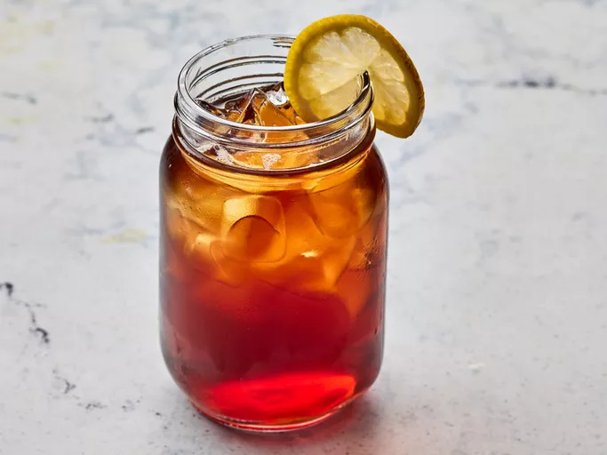

Smooth, sweet tea comes together perfectly with a pinch of baking soda for a smooth flavor.
Reviewers love how simple the steps are for fast, reliable Southern-style sweet tea.
Allrecipes member DivineHealth7 shares, "The baking soda makes it delicious."